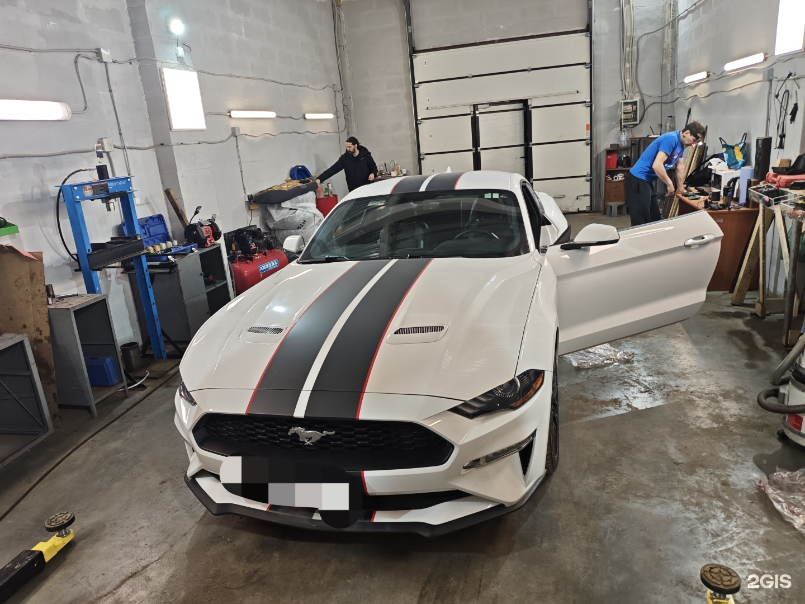
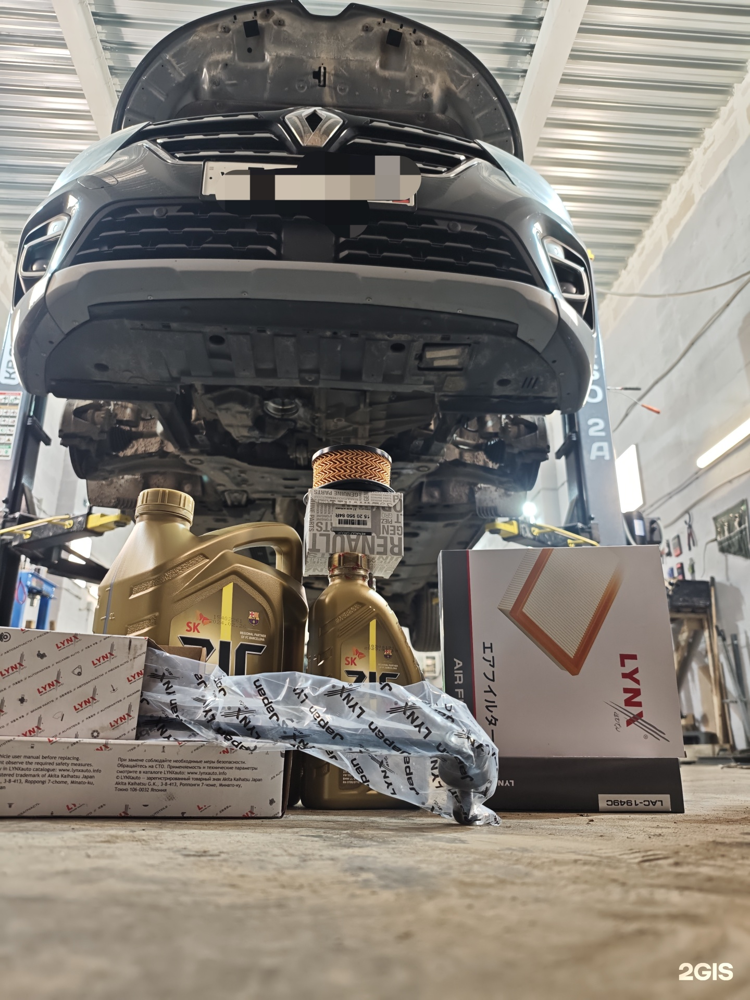
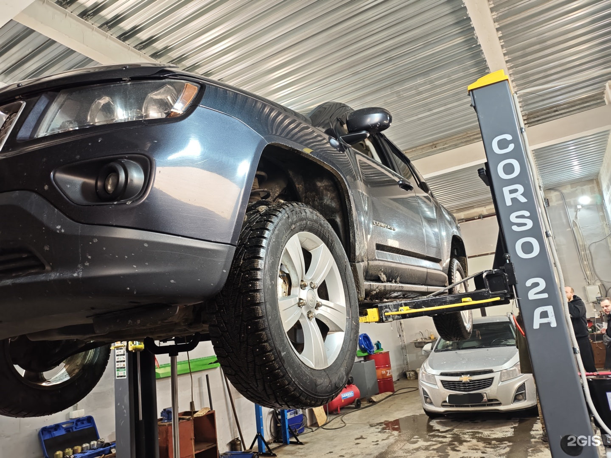
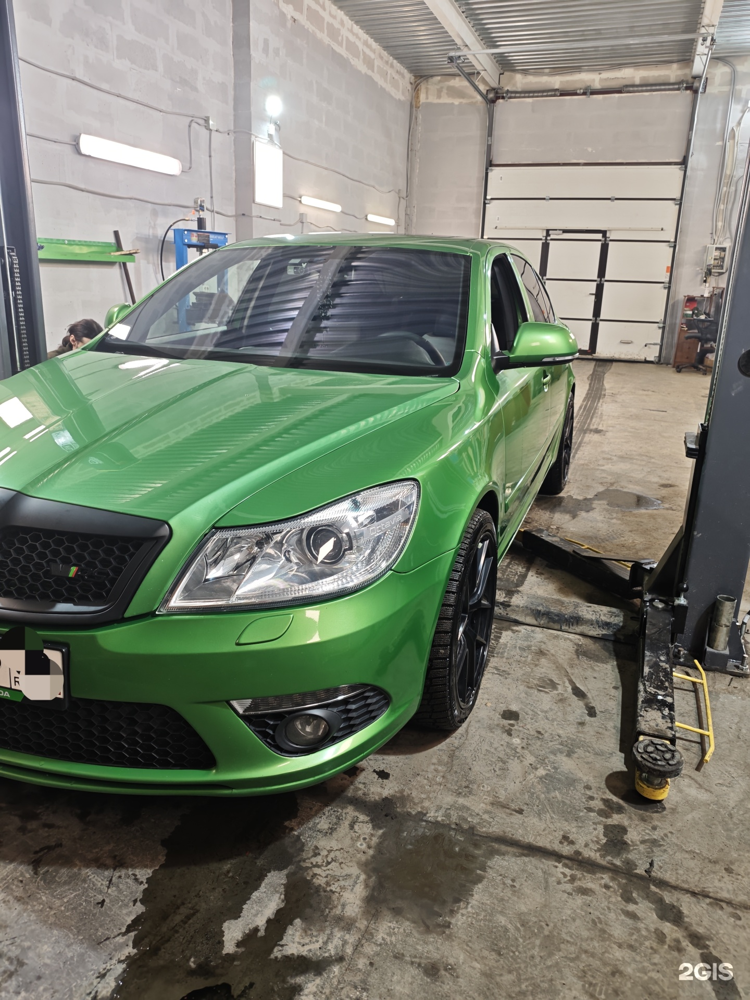

Посетитель рассказывает об обращении с незаводившимся автомобилем, диагностике и замене масла; результатом остался доволен.
Полный отзыв в 2ГИСЦентр
АвтоБокс109
Кузовной ремонт и диагностика легкового автомобиля
+7 (996) 250-55-85ТелефонСварочные работы, ремонт ходовой, бензиновых двигателей и МКПП, замена масла. Обсудите неисправность по телефону.
Адрес
Псков, Иркутский переулок, 2Б, помещение 1/109, 1 этаж
Часы работы
Пн–пт 09:00–19:00; сб–вс — выходные, приём по предварительной записи

Демо-концепт · текущий прайс ещё не подтверждён
Направления
С чем можно обратиться
Кузовной ремонт
Сварочные работы
Компьютерная диагностика автомобилей
Замена масла
Ремонт ходовой части автомобиля
Ремонт бензиновых двигателей
Ремонт МКПП
Прайс
Услуги и цены
Фотографии
АвтоБокс на фотографиях
Фотографии из карточки бизнеса. Снимки не подтверждают актуальность цен.



Отзывы
Что отмечают посетители
Пересказ субъективных мнений без имён авторов. Полные отзывы — в 2ГИС.
Контакты
Адрес и связь
Часы работы
Пн–пт 09:00–19:00; сб–вс — выходные, приём по предварительной записи
Телефон+7 (996) 250-55-85
Обсудите неисправность и нужные работы
Позвонить